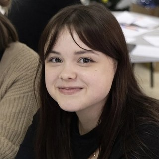
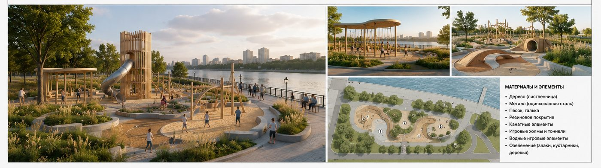

Курс дополнительного образования
ААИ ЮФУ · Ростов-на-Дону
Методическое пособиеИИ в архитектуре
Пять разделов: настройка рабочего места, QGIS, анализ данных и сценариев, генерация идей и визуализация, синтез и презентация. Материалы слушателей курса в одном месте.
Содержание5 разделов
Настройка рабочего места
Это подготовительный шаг перед первым занятием — здесь всё, что нужно сделать заранее: получить доступ к нейросетям, установить софт и проверить, что всё работает. Отведите на это отдельный вечер до старта курса, чтобы на самих занятиях не тратить время на технические проблемы.
Блок 1. Сетевые и технические требования
Для работы нужен доступ хотя бы к одному сервису с языковой моделью. Платные подписки не нужны: для целей курса достаточно Алисы AI или другого аналогичного локального решения. Зарубежные сервисы (Claude, ChatGPT, Gemini) можно использовать по желанию, для них понадобится стабильное сетевое соединение.
Подробный технический регламент настройки рабочего места высылается участникам отдельно, в закрытом чате потока.
Блок 2. Языковые модели: доступ и регистрация
Одинаковый порядок действий для Алисы AI (alice.yandex.ru), а при желании для Claude (claude.ai), ChatGPT (chatgpt.com) и Gemini (gemini.google.com):
- ✓Убедитесь, что ваше рабочее место соответствует сетевым требованиям сервиса — сделайте это до начала регистрации, не после
- ✓Заведите отдельную почту, которая раньше не использовалась в этом сервисе — подойдёт обычный Gmail или Outlook
- ✓Перейдите на официальный сайт сервиса и пройдите регистрацию по email, подтвердите адрес по ссылке из письма
- ✓Если сервис просит номер телефона для подтверждения — используйте реальный номер, способный принимать SMS
- ✓Сохраняйте одни и те же сетевые условия на протяжении всей регистрации — их смена в процессе — частая причина блокировки аккаунта
- ✓Используйте те же сетевые условия и при дальнейшей работе с сервисом
- ✓Сохраните логин и пароль в надёжном месте, включите двухфакторную аутентификацию, если сервис её предлагает
Блок 3. Установка софта
QGIS. Устанавливайте версию LTR (Long Term Release) — сейчас это 3.44. Она стабильнее последней «свежей» версии и меньше преподносит сюрпризов на занятиях. Скачать можно с официального сайта qgis.org/download — там же есть версии под Windows и macOS с пошаговой инструкцией по установке.
Photoshop. Нужна активная подписка Adobe Creative Cloud с доступом к Photoshop. Минимальные системные требования на 2026 год:
- ✓Windows 11 (64-бит, версия 23H2 и новее) или macOS 13 (Ventura) и новее
- ✓Не менее 8 ГБ оперативной памяти, комфортно — от 16 ГБ
- ✓Видеокарта с поддержкой DirectX 12 (Windows) или Metal (Mac)
- ✓Быстрый SSD-накопитель, минимум 20 ГБ свободного места под установку и рабочие файлы
Блок 4. Чек-лист готовности к занятиям
Перед первым звонком убедитесь, что закрыты все четыре пункта:
- ✓Сетевой доступ к сервисам настроен и работает стабильно
- ✓Доступ хотя бы к одному сервису с языковой моделью (Алиса AI или аналог) настроен и работает
- ✓QGIS (LTR) установлен и открывается без ошибок
- ✓Photoshop установлен, обновлён до актуальной версии, подписка активна
Цифровая компоновка графических изображений
Основной инструмент модуля — QGIS: пространственный анализ, карты участка и компоновка макета.
Что такое QGIS и зачем он архитектору
QGIS — бесплатная геоинформационная система с открытым кодом. Для архитектора и градостроителя это инструмент пространственного анализа: работа с геоподосновой, наложение слоёв данных и генерация чистых графических схем.
Геопривязка
Все объекты имеют точные координаты. Схема всегда соответствует реальной территории.
Точные масштабы
Любой экспорт — с заданным масштабом, рамкой, сеткой. Контроль над каждым пикселем.
Открытые данные
OSM, Росреестр, данные переписи, DEM-рельеф — всё загружается напрямую.
ИИ-совместимые выгрузки
PNG с прозрачным фоном, чёткими контурами и минималистичным стилем — идеал для vision-моделей.
Видеоурок Часть 1 — Интерфейс, проект, система координат
К этому видео прикреплена таблица с готовыми координатами участка и удобный геокалькулятор — чтобы легко переводить свои координаты в нужный формат. Открываем QGIS и погружаемся в работу.
Геокалькулятор
Координаты участка для практики
Введите точки в инструмент «Перейти к координатам» или создайте временный слой. Система координат — WGS 84 (EPSG:4326).
Что изучается в Видеоуроке Часть 1
- ✓Интерфейс QGIS: панели, менеджер слоёв, строка состояния
- ✓Создание нового проекта и сохранение .qgz
- ✓Настройка системы координат проекта (CRS)
- ✓Подключение картографических подложек (XYZ Tiles, WMS)
- ✓Инструмент «Перейти к координатам» — поиск точки на карте
- ✓Конвертация форматов координат через geoproj.ru
Видеоурок Часть 2 — OpenStreetMap, QuickOSM, оформление карты
Справочники тегов OSM
- Оформите карту своего участка проектирования с Rule-based (правило-based) оформлением
- Возьмите Ботанический сад или любой другой участок: парк, жилой квартал, территорию университета
Ключевые теги QuickOSM
| Ключ (Key) | Значение (Value) | Что загружает | Тип |
|---|---|---|---|
highway | primary / residential / footway | Дороги по иерархии | Линии |
building | yes / residential / commercial | Контуры зданий | Полигоны |
landuse | residential / park / forest | Функциональные зоны | Полигоны |
natural | wood / water / grassland | Природные объекты | Полигоны |
leisure | park / garden / playground | Рекреация и досуг | Полигоны |
amenity | school / cafe / parking | Общественные объекты | Точки/Полигоны |
Что изучается в Видеоуроке Часть 2
- ✓Установка и запуск плагина QuickOSM
- ✓Загрузка данных по bbox и по ключам/тегам
- ✓Rule-based стилизация: условные правила оформления
- ✓Иерархия дорог по толщине и цвету линий
- ✓Оформление зданий по типу через атрибут building=*
- ✓Подписи объектов через Layer Labels (поле name)
- ✓Создание компоновщика с легендой
Видеоурок Часть 3 — Транспортная схема, рельеф, кадастр, макет и PDF
А самое важное на этом уроке — мы перейдём к финальному этапу работы: подготовим карту в макете (Layout). Вы научитесь добавлять масштабную линейку, легенду, текст, северную стрелку и красиво оформлять карту для печати или презентации. В конце урока мы сохраним готовую карту в PDF.
Это один из самых важных и практических уроков курса! Готовы? Тогда открываем наш проект и продолжаем!
Материалы к уроку

Пришло время собрать всё вместе и сделать полноценную карту!
- Основное задание: подготовьте и оформите в макете красивую ситуационную схему вашего участка (или территории проектирования)
- Дополнительное задание (для желающих): сделайте отдельную транспортную схему с акцентом на дорожную сеть и тоже оформите её в макете
Что изучается в Видеоуроке Часть 3
- ✓Построение транспортной схемы территории
- ✓Создание изолиний рельефа и их подписи
- ✓Загрузка кадастровых участков через плагин (НСПД / ПКК)
- ✓Работа с данными рельефа OpenTopography
- ✓Компоновка карты в Layout: масштабная линейка, легенда, текст
- ✓Северная стрелка и оформление карты для печати/презентации
- ✓Экспорт готовой карты в PDF
Типы данных и источники
| Тип данных | Формат | Источник | Применение |
|---|---|---|---|
| Векторные границы | SHP / GeoJSON | OSM, Росреестр | Контуры зданий, кварталов, ЗУ |
| Рельеф / ЦМР | GeoTIFF / DEM | SRTM, Copernicus | Горизонтали, визуализация рельефа |
| Спутниковая подложка | WMS / XYZ tiles | Google, Bing, Яндекс | Контекст, идентификация |
| Кадастр / ЗУ | GeoJSON / KML | pkk.rosreestr.ru | Границы участков, категории земель |
| Транспортная сеть | SHP / OSM | OpenStreetMap | Дороги, пешеходные связи |
| Социальные данные | CSV / XLS | Росстат | Тепловые карты, аналитика |
Типы схем, которые читают ИИ-нейросети
Vision-модели анализируют изображения через паттерны и контрасты. Схема должна быть читаемой, контрастной и семантически однозначной.
Функциональное зонирование
Заливки зон цветами, минимум текста, чёткие границы. ИИ распознаёт зоны по цвету и просит описание легенды. PNG 2000×2000 пикс.
Транспортно-пешеходные связи
Линии разной толщины по иерархии (магистраль → улица → тропа). ИИ хорошо читает иерархию и анализирует связность.
Морфотипологическая схема
Контуры зданий с заливкой по типу застройки. Минималистичный стиль — белый фон, серые контуры, акцентные цвета.
Тепловая карта (Heatmap)
Градиентная визуализация плотности. ИИ распознаёт кластеры и аномалии. Чёрный или белый фон — не серый.
Схема рельефа / высотности
Горизонтали с подписями или цветовая шкала высот. ИИ точно описывает перепад рельефа и ориентацию склонов.
Настройки стилей и экспорт под ИИ
Принципы стиля для ИИ-читаемости
- ✓Белый или светлый фон (#FAFAFA) — нейросети лучше читают контраст на светлом
- ✓Обводки объектов не тоньше 0.5 pt в масштабе экспорта
- ✓Цветовые заливки с насыщенностью 40–80%
- ✓Легенда выносится за рамку или передаётся текстом в промте
- ✓Разрешение: минимум 150 DPI, рекомендовано 300 DPI
- ✓Формат: PNG без потерь предпочтительнее JPG
Экспорт через Print Layout
Проект → Создать компоновщик печати
Размер A3 горизонтально. Добавьте элемент «Карта», зафиксируйте масштаб.
Настройка масштаба
В свойствах карты установите масштаб вручную (1:5000). Нажмите «Зафиксировать».
Макет → Экспорт как изображение
PNG, 300 DPI. Снимите «Антиалиасинг» только если контуры задваиваются.
Экспорт PDF
PDF сохраняет векторные объекты. Используйте для постобработки в Illustrator.
Пакетный экспорт через Atlas
Генерирует серию схем по объектам. Удобно для загрузки серии в ИИ за один раз.
ИИ-платформы курса
- Точнее всех читает пространственные схемы
- Поддерживает загрузку PDF напрямую
- Развёрнутое текстовое описание схем
- Хорошо работает с легендой в промте
- API для пакетной обработки серий
- Зарубежный сервис: доступ обеспечиваете самостоятельно
- Сильный анализ структуры и иерархии
- Может предложить улучшения схемы
- Хорошо работает в диалоговом режиме
- Code Interpreter: считает площади
- Зарубежный сервис: доступ обеспечиваете самостоятельно
- Глубокий текстовый анализ и синтез
- Составление ТЗ и пояснительных записок
- Генерация промтов для других ИИ
- Работа с длинными документами (PDF)
- Зарубежный сервис: доступ обеспечиваете самостоятельно
- Понимает русскоязычные подписи на схемах
- Интеграция с геосервисами Яндекс
- Корректно читает топонимику РФ
- Работает напрямую, из России
- Лучше для описания, чем для анализа
- ИИ-генерация презентаций из текста
- Автоматическое создание слайдов по промту
- Встроенные профессиональные шаблоны
- Экспорт в PDF и PowerPoint
- Идеально для подачи проектного анализа
| Задача | Платформа | Формат подачи |
|---|---|---|
| Анализ пространственных схем | Gemini | PNG + легенда в тексте |
| Анализ транспортной связности | ChatGPT | PNG, масштаб 1:5000–1:10000 |
| ТЗ, пояснительные записки, промты | Claude | Текст / PDF документ |
| Описание схем на русском | Алиса AI | PNG с русскими подписями |
| Презентация проектного анализа | Gamma.app | Текст / структура → слайды |
| Сравнение «до/после» | Gemini | 2 PNG в одном запросе |
Полный воркфлоу: от данных до ИИ-анализа
Подготовка занимает 20% времени, остальное — QGIS работает за вас
Один правильно настроенный стиль → экспорт любых фрагментов за секунды.
Сбор данных
QuickOSM → здания, дороги, зелень по bbox. Кадастр из pkk.rosreestr.ru. Спутниковая подложка через XYZ Tiles.
Подготовка стилей
Символика слоёв: минималистичные заливки, чёткие обводки. Сохранить стиль (.qml) — применять к любому проекту.
Создание компоновщиков
По компоновщику на каждый тип схемы. Зафиксировать масштаб. Настроить один раз — использовать многократно.
Экспорт PNG 300 DPI
Макет → Экспорт как изображение. Имена файлов с кодом: zone_01.png, transport_01.png.
Загрузка в ИИ + промт
Прикрепить PNG, вставить промт с легендой и задачами. Для серий — загружать последовательно.
Итерация по замечаниям
Выделить ключевые выводы. Вернуться в QGIS, скорректировать схему, экспортировать v2. Повторить.
Итог: что даёт связка QGIS + ИИ
Точная геоподоснова + Vision-модели = быстрая предпроектная аналитика, обоснование решений и генерация текстовых описаний для ПЗЗ, ТЗ и презентаций — без ручного описания каждого чертежа.
Итог модуля: что должно быть готово к началу следующего модуля
Набор готового материала зависит от того, по какому треку вы шли в QGIS — найдите свой ниже.
Трек А · Изучаю QGIS полностью
Вы посмотрели все три видеоурока и делали практику по ходу. К началу следующего модуля у вас должно быть готово:
- ✓Rule-based карту участка — задание после Видеоурока Часть 2
- ✓Ситуационную схему в макете — задание после Видеоурока Часть 3
- ✓По желанию — отдельную транспортную схему в макете
Трек Б · Знакомлюсь с QGIS
Вы посмотрели только Видеоурок Часть 1 и программу не устанавливали. К началу следующего модуля у вас должно быть готово одно из двух:
- ✓Если всё же устанавливали QGIS и повторяли Часть 1 — скриншот этой работы
- ✓Если не устанавливали — любую схему или карту вашей территории, найденную в интернете, для презентации
Готовое домашнее задание берите с собой на синхронную встречу Модуля 2 — она пройдёт в чате потока.
Модуль 2 · Анализ данных и сценариев →Анализ данных и сценариев
Перед тем как переходить к практической работе с генерацией изображений и текстов, важно понимать базовые принципы устройства современных нейросетей и различия между основными типами моделей, которые встретятся в курсе.
Какие нейросети используются в курсе
- Работают с текстом, кодом, документами
- Понимают и генерируют развёрнутые ответы
- Анализируют изображения (vision)
- Основа для промтинга в курсе
- Создают изображения по текстовому промту
- Работают с референсами и стилями
- Применяются для визуализации идей
- Основа Модуля 3
- Доступны напрямую на территории РФ
- Хорошо работают с русским языком
- Интеграция с отечественными сервисами
Ключевые понятия
- ✓Промт — текстовый запрос, формирующий результат работы нейросети
- ✓Токены — единицы текста, которыми оперирует модель при обработке запроса
- ✓Контекстное окно — объём информации, который модель «помнит» в рамках диалога
- ✓Референс — изображение-образец, на основе которого генерируется новый результат
- ✓Галлюцинации — ошибочные или придуманные ответы модели, требующие проверки
- ✓Мультимодальность — способность модели работать одновременно с текстом, изображениями и документами
Итог модуля: что должно быть готово к началу следующего модуля
В Модуле 3 выдаются доступы к нейросетям и ключи для промтинга и Photoshop. К началу модуля у вас должно быть готово:
- ✓Определённость, какими сервисами будете пользоваться — Алиса AI или, по желанию, Gemini / ChatGPT / Claude
- ✓Участок проектирования под рукой — он понадобится для первых промтов
- ✓по желаниюОтдельная почта и настроенный сетевой доступ к сервису — только если выбрали зарубежный сервис (Gemini / ChatGPT / Claude); для Алисы AI не нужны (см. Спринт 0, Блок 1–2)
Дальше — самостоятельная работа: уроки по промтингу и Photoshop.
Модуль 3 · Генерация идей и визуализация →Генерация идей и визуализация

Модуль посвящён практической работе с нейросетями для визуализации архитектурных решений: от подготовки исходного драфта в Photoshop и формулировки промта до отбора результата и финальной постобработки.
Структура модуля
Промтинг для визуализации
Принципы составления запросов для генеративных моделей: описание объекта, стиля, освещения, ракурса, материалов.
Подготовка драфта в Photoshop
Сборка исходника для нейросети: скетч композиции, коллаж из референсов, маски зон контроля, корректная перспектива.
Отбор и доработка драфта
Выбор наиболее удачного варианта, повторная генерация деталей, работа с masking и inpainting при необходимости.
Постобработка в Photoshop
Цветокоррекция, ретушь, добавление контекста (люди, окружение, растительность), финальная компоновка изображения.
Принципы хорошего промта для визуализации
- ✓Чёткое описание типа объекта и архитектурного стиля
- ✓Указание ракурса и масштаба (вид с улицы, аэросъёмка, интерьер)
- ✓Описание материалов и текстур (бетон, дерево, стекло, металл)
- ✓Условия освещения и время суток
- ✓Референсные стили или известные архитектурные аналоги
- ✓Негативные промты — что нужно исключить из результата
большие панорамные окна, вид с улицы в вечернее время, тёплое освещение окон,
ландшафтное озеленение на переднем плане, фотореалистичный рендер,
--no искажённые пропорции, лишние объекты на фасаде
Промтинг для архитектора — основы и практика
Что такое нейросеть?
Нейросеть — это инструмент, который помогает ускорить работу архитектора. Она не заменяет специалиста и не принимает решения за него. Может ошибаться, придумывать факты и не знает всех строительных норм. Любой результат нужно проверять.
Лучше всего нейросети помогают:
- ✓Искать идеи
- ✓Создавать первые концепции
- ✓Подбирать референсы
- ✓Делать черновые визуализации
- ✓Писать и редактировать тексты
- ✓Автоматизировать рутинные задачи
Основные виды нейросетей
Для работы с текстом
Используются для поиска идей, написания описаний проектов, анализа документов, составления ТЗ и редактирования текстов.
Примеры: ChatGPT, Claude, Gemini
Для генерации изображений
Помогают создавать концепции, референсы, эскизы и визуализации.
Примеры: ChatGPT, Midjourney, Flux, Stable Diffusion, Visoid
Для создания 3D-моделей
Позволяют быстро получить концептуальную модель по тексту или изображению.
Примеры: Tripo AI, Meshy AI, Rodin
Для создания презентаций
Автоматически оформляют презентации, структуру и тексты.
Примеры: Gamma, Canva AI, Beautiful.ai, Tome
Где архитектор может использовать нейросети?
Поиск концепций и идей
Подбор референсов
Концептуальные визуализации
Схемы, диаграммы и иконки
Быстрые 3D-модели
Подготовка презентаций
Написание пояснительных записок
Анализ документов и нормативной базы
Что такое промпт?
Промпт — это запрос или инструкция, которую мы пишем нейросети. Чем лучше написан промпт — тем лучше получится результат.
Формула хорошего промпта: РОЛЬ + КОНТЕКСТ + ЗАДАЧА + ПРИМЕРЫ + ФОРМАТ + ТОН
Роль
Кем должна быть нейросеть?
Например: архитектор, урбанист, дизайнер интерьера.
Контекст
Что происходит? Над каким проектом работаете; какие есть ограничения; для кого создаётся проект.
Задача
Что именно нужно сделать?
Придумать концепцию, написать текст, проанализировать документ, создать визуализацию.
Примеры
Покажите образец или опишите, на что ориентироваться.
Формат
Как должен выглядеть ответ?
Список, таблица, текст, презентация.
Тон
Какой стиль ответа нужен?
Официальный, простой, научный, дружелюбный.
Пример промпта по формуле — детская площадка на набережной
Тема: концепция детской площадки на набережной в Ростове-на-Дону
| Роль | Контекст | Задача | Примеры | Формат | Тон |
|---|---|---|---|---|---|
| Ты — архитектор и ландшафтный дизайнер с опытом создания общественных пространств и детских площадок. | Ростов-на-Дону, набережная реки Дон. Тёплый климат, много солнечных дней. Локация — активная городская зона. Рядом вода, зелёные зоны и велодорожка. Площадка для детей разного возраста (2–12 лет). | Разработай концепцию детской площадки на набережной в Ростове-на-Дону. Предложи идею, которую можно связать с характером города и рекой Дон. Опиши основные зоны и сценарии использования, подбери материалы и элементы благоустройства. | — Современные природные площадки с деревом и водой — Волнообразные формы и плавные линии — Использование местных материалов (дерево, металл, песок) — Интеграция с набережной и видами на реку |
1. Общая концепция 2. Функциональные зоны 3. Визуализация (2–3 изображения) 4. Генеральный план 5. Список материалов |
Профессиональный, креативный, но понятный заказчику. Акцент на комфорт детей, безопасность, экологичность и связь с местом. |
Задача: разработай концепцию детской площадки на набережной в Ростове-на-Дону. Предложи идею, которую можно связать с характером города и рекой Дон. Опиши основные зоны и сценарии использования, подбери материалы и элементы благоустройства. Предложи визуальный образ площадки.
Примеры для ориентира: современные природные площадки с деревом и водой, волнообразные формы и плавные линии, использование местных материалов (дерево, металл, песок), интеграция с набережной и видами на реку.
Формат результата: 1) общая концепция площадки; 2) функциональные зоны и сценарии использования; 3) визуализация площадки (2–3 изображения с разных ракурсов); 4) генеральный план; 5) список материалов и элементов.
Тон: профессиональный, креативный, но понятный заказчику. С акцентом на комфорт детей, безопасность, экологичность и связь с местом.

Задание
Используя пример, составить промпт для создания:
Материалы, подготовленные на основе заданных промптов, будут использованы в финальной презентации.
Пример задания: детская площадка в Элисте
РОЛЬ
Ты — архитектор и ландшафтный дизайнер с опытом создания общественных пространств и детских площадок.
КОНТЕКСТ
Элиста, Республика Калмыкия. Континентальный климат: жаркое сухое лето, холодная зима, много солнечных дней. Локация — центральная городская зона, либо парк рядом с буддийским храмом (хурулом). Площадка для детей разного возраста (2–12 лет). Важно отразить культурный код региона и буддийскую эстетику.
ЗАДАЧА
Разработай концепцию детской площадки в буддийском стиле для города Элиста. Предложи идею, которая связывает игровое пространство с калмыцкой культурой и буддийскими символами. Опиши основные зоны и сценарии использования, подбери материалы и элементы благоустройства. Предложи визуальный образ площадки.
ПРИМЕРЫ ДЛЯ ОРИЕНТИРА
- ✓Использование мандалы в планировке
- ✓Элементы буддийской символики (лотос, колесо Дхармы, ступы) в игровых формах
- ✓Калмыцкий орнамент в мощении и малых формах
- ✓Дерево, камень, природные материалы
- ✓Молитвенные флажки и ветряные колокольчики как часть среды
- ✓Зоны для тихих игр и медитации
- ✓Цветовая гамма: красный, жёлтый, синий, белый (цвета буддийских флагов)
ФОРМАТ РЕЗУЛЬТАТА
Общая концепция площадки (описание идеи и культурной отсылки).
ТОН
Профессиональный, креативный, культурно-чувствительный. С акцентом на безопасность детей, экологичность, аутентичность и связь с буддийской традицией Калмыкии.
Как из этого промпта получить генплан?
В пункте «Формат результата» отдельно пропишите генплан — и дополните запрос нужными подробностями (масштаб, экспликация зон, легенда).

Как из этого промпта получить визуализации?
Так же — пропишите визуализации в «Формате результата» и дополните запрос нужными подробностями (ракурс, время суток, количество людей в кадре).

Основные ошибки в промтинге
✗ Слишком короткий запрос
«Сделай презентацию.» — нейросеть не знает ни темы, ни стиля, ни аудитории.
✗ Нет контекста
Нейросеть не знает, над каким проектом вы работаете.
✗ Ожидание идеального результата с первого раза
Работа с нейросетью — это диалог и несколько итераций.
✗ Полное доверие нейросети
Всегда проверяйте факты, нормативы и выводы.
Photoshop до генерации — подготовка драфта для нейросети
Photoshop работает не только после генерации: качественный исходник, собранный вручную, значительно повышает точность и управляемость результата на выходе из нейросети.
Скетч-основа композиции
Быстрый набросок объёмов и расположения объекта на участке — задаёт нейросети правильную геометрию и пропорции сцены.
Коллаж из референсов
Совмещение нескольких изображений-аналогов в один драфт — материалы, формы, окружение собираются в единую отправную точку.
Маски для зон контроля
Выделение областей, которые нейросеть должна изменить или, наоборот, сохранить без изменений — основа для inpainting.
Корректная перспектива
Выравнивание линий и горизонта на исходнике — нейросеть точнее держит перспективу, если она задана корректно изначально.
- ✓Чёрно-белый или плоско закрашенный драфт уже задаёт силуэт и масштаб будущего здания
- ✓Грубая тоновая подкладка (light/shadow map) помогает нейросети выбрать верное освещение сцены
- ✓Контекст участка (соседние здания, дорога, зелень) на драфте удерживает масштаб и не даёт сцене «потеряться»
- ✓Чистый альфа-канал вокруг объекта упрощает дальнейшую замену фона при генерации
Postprocessing — на что обратить внимание в Photoshop
Цветокоррекция
Баланс белого, контраст, насыщенность — приведение изображения к единому визуальному стилю.
Устранение артефактов
Исправление характерных ошибок генерации: искажённой геометрии, лишних деталей, швов.
Добавление контекста
Вставка людей, машин, растительности для повышения реалистичности сцены.
Финальная ретушь
Резкость, виньетирование, итоговая компоновка для презентации проекта.
Материалы занятия по Photoshop
Референсы и примеры работ с занятия доступны по ссылке:
На этом занятии мы разобрали полный рабочий процесс от создания документа до финального экспорта:
- ✓Создали новый документ (Файл → Создать) с нужными размерами
- ✓Познакомились со слоями — загружали фото, меняли порядок слоёв, группировали их
- ✓Вырезали объекты с помощью быстрого выделения и прямолинейного лассо
- ✓Трансформировали элементы — масштабировали и поворачивали через Ctrl+T
- ✓Собирали коллаж: фон, архитектура, детали (люди, деревья) на отдельных слоях
- ✓Корректировали цвет и тональность через корректирующие слои (Цветовой тон, Насыщенность, Кривые)
- ✓Добавляли тени и свет (применяли эффекты шума и движения)
- ✓Работали с текстом — редактировали параметры шрифта, загружали новый шрифт
- ✓Запомнили важные правила: как сохранять .psd и экспортировать в JPG
Итог модуля: что должно быть готово к началу следующего модуля
В Модуле 4 собирается презентация в Gamma.app. К началу модуля у вас должно быть готово:
- ✓Готовая визуализация проекта после постобработки в Photoshop
- ✓Текстовое описание решений — промты и итоговые формулировки, которые войдут в презентацию
- ✓Схемы из Модуля 1 (QGIS) под рукой — пригодятся для сборки в один файл
Дальше — последняя синхронная встреча потока, в чате: разбор сборки презентации в Gamma.
Модуль 4 · Синтез и презентация →Синтез и презентация
Завершающий модуль курса посвящён сборке всех наработок — схем из QGIS, визуализаций и текстовых описаний — в единую презентацию проекта с помощью Gamma.app.
Что такое Gamma.app
ИИ-сервис для сборки презентаций
Gamma.app генерирует структуру и дизайн слайдов на основе текстового описания или плана проекта, избавляя от ручной вёрстки в PowerPoint и позволяя сосредоточиться на содержании.
Этапы сборки презентации
Сбор материалов проекта
Схемы из QGIS (зонирование, транспорт, рельеф), визуализации из Модуля 3, текстовые описания и аналитика из ИИ-инструментов.
Формирование структуры
Составление текстового плана презентации: введение, анализ территории, концепция, визуализация, выводы.
Генерация в Gamma.app
Загрузка плана или текста в сервис, выбор шаблона и стиля оформления, автоматическая генерация слайдов.
Доработка и оформление
Замена сгенерированных изображений на собственные схемы и визуализации, корректировка текста и порядка слайдов.
Экспорт презентации
Сохранение готовой работы в PDF или PowerPoint для защиты проекта или отправки заказчику.
Чек-лист готовой презентации
- ✓Ситуационная схема территории из QGIS, оформленная в макете
- ✓Транспортная и/или функциональная схема (при наличии)
- ✓Визуализация проекта после постобработки в Photoshop
- ✓Текстовое обоснование решений, подготовленное с помощью ИИ
- ✓Единый визуальный стиль слайдов (шрифты, цвета, отступы)
- ✓Экспортированный итоговый файл в PDF
Итог курса
К завершению Модуля 4 у каждого слушателя есть готовая презентация проекта, собранная с использованием полного цикла инструментов курса: QGIS для пространственного анализа, нейросети для визуализации и текста, Gamma.app для финальной сборки.
Что подготовить к итоговой аттестации
Отдельной очной защиты на последнем занятии не будет — это был урок по сборке презентации в Gamma. Проект сдаётся на следующий день по расписанию:
- ✓Ссылка на готовую презентацию (Gamma или альтернативный сервис)
- ✓Заполненная форма с описанием кейса и отзывом о курсе